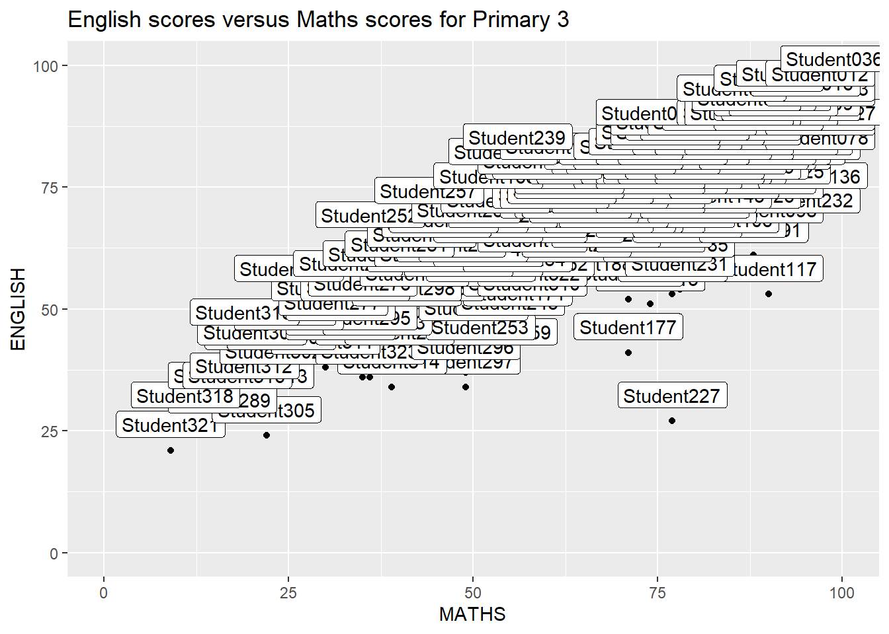
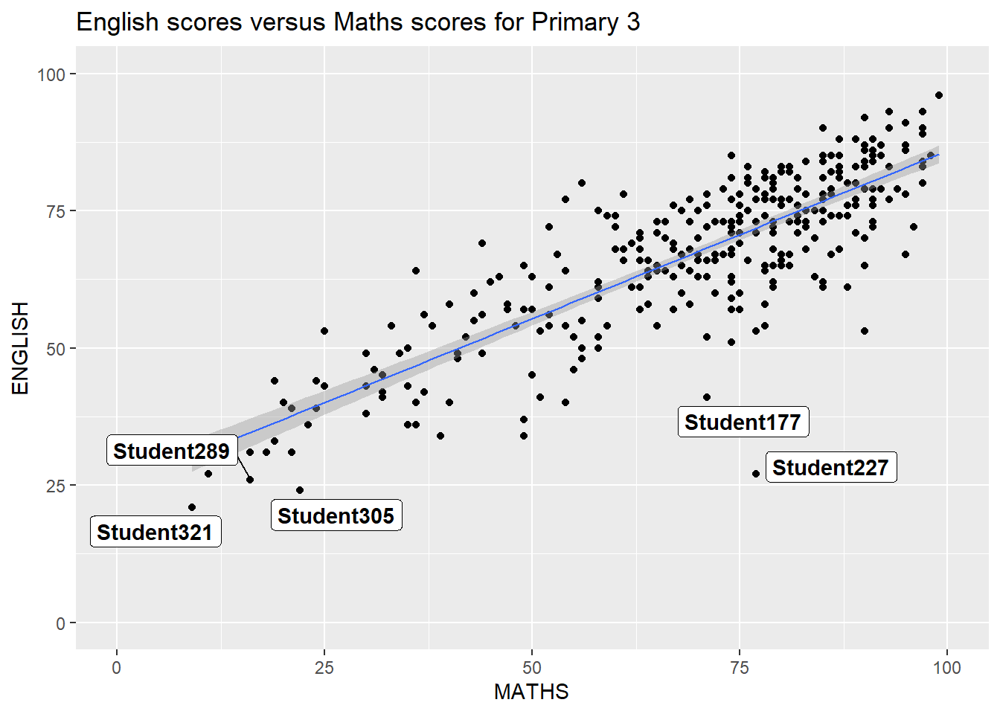
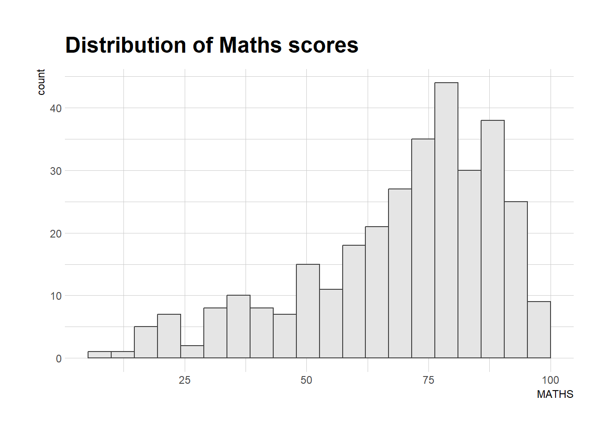
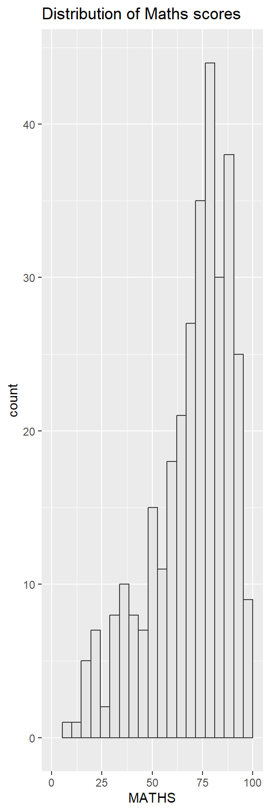
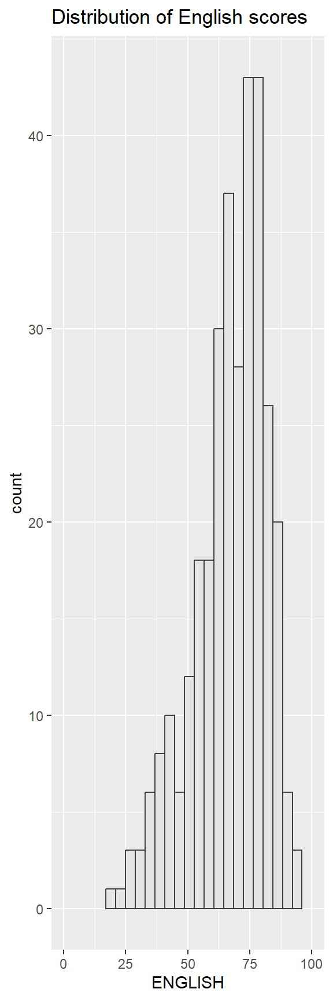
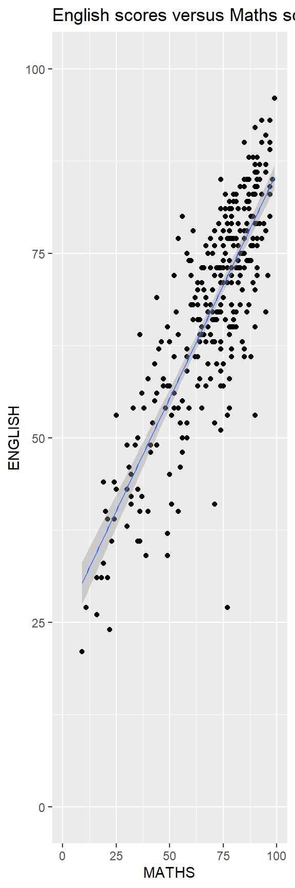
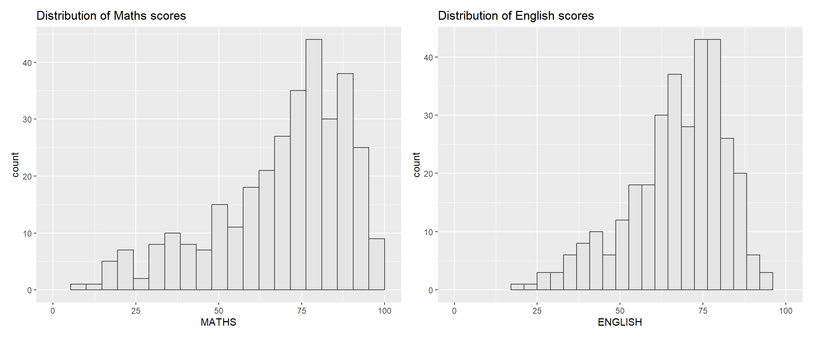
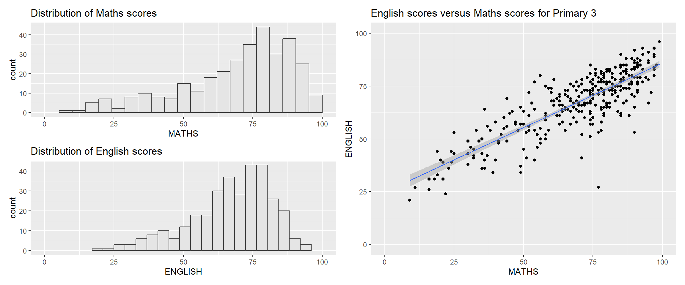
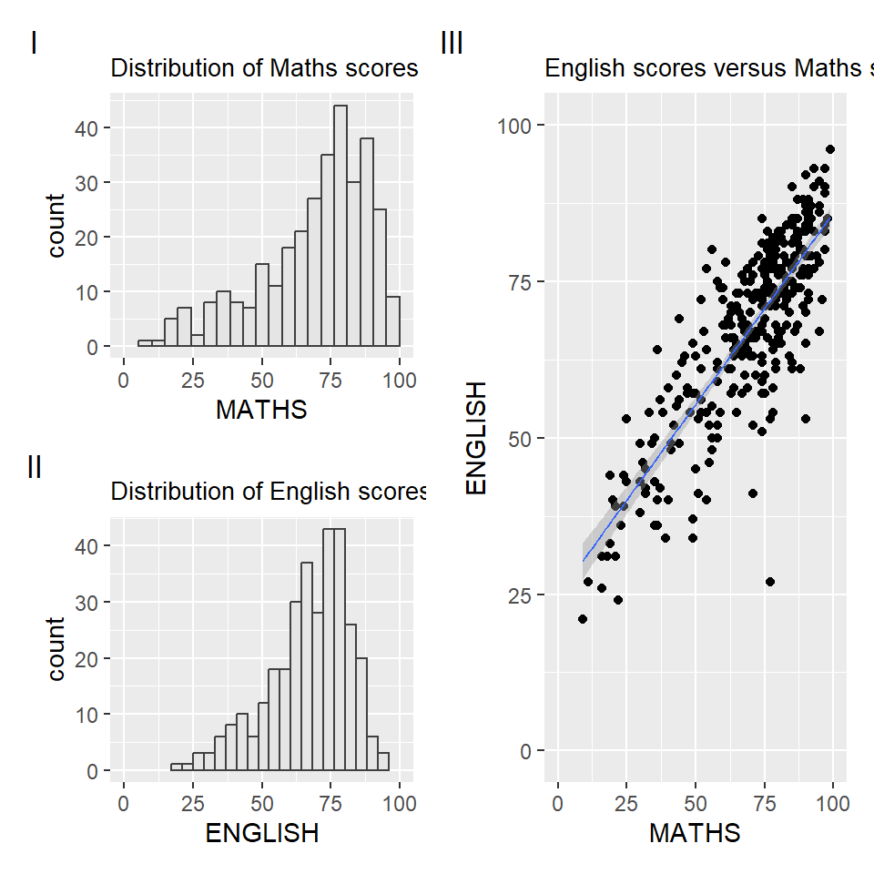
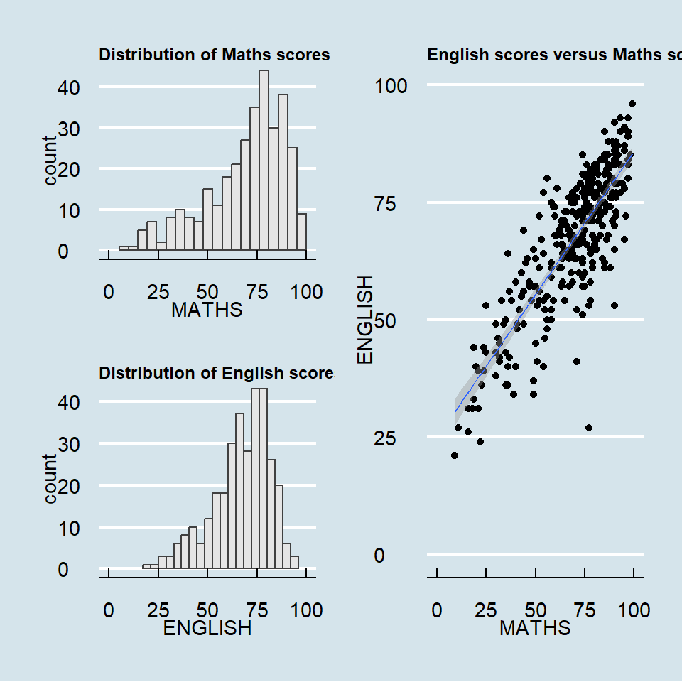

pacman:: p_load(ggrepel, patchwork,
ggthemes, hrbrthemes,
tidyverse)Hands-on Ex2
Overview
In this hands-on exercise, several ggplot2 extensions for creating more elegant and effective statistical graphics will be introduced
control the placement of annotation on a graph by using functions provided in ggrepel package, create professional publication quality figure by using functions provided in ggthemes and hrbrthemes packages, plot composite figure by combining ggplot2 graphs by using patchwork package.
Install & Load Libraries
The code chunk below installs and launches the tidyverse package into R environment
- ggrepel: an R package provides geoms for ggplot2 to repel overlapping text labels.
- ggthemes: an R package provides some extra themes, geoms, and scales for ‘ggplot2’.
- hrbrthemes: an R package provides typography-centric themes and theme components for ggplot2.
- patchwork: an R package for preparing composite figure created using ggplot2.
Importing the data
The code chunk below imports exam_data.csv into R environment by using read_csv() function of readr package, which is part of the tidyverse package.
exam_data <- read_csv("data/Exam_data.csv")There are a total of 7 attributes in the exam_data tibble data frame. 4 of them are categorical data type and the other 3 are in continuous data type.
- categorical attributes are: ID, CLASS, GENDER and RACE.
- continuous attributes are: MATHS, ENGLISH and SCIENCE.
GGRepel Annotation
One of the challenge in plotting statistical graph is annotation, especially with large number of data points.

ggplot(data=exam_data,
aes(x= MATHS,
y=ENGLISH)) +
geom_point() +
geom_smooth(method=lm,
size=0.5) +
geom_label(aes(label = ID),
hjust = .5,
vjust = -.5) +
coord_cartesian(xlim=c(0,100),
ylim=c(0,100)) +
ggtitle("English scores versus Maths scores for Primary 3")GGRepel is an extension of ggplot2 package which provides geoms for ggplot2 to repel overlapping text as in our examples on the right.
geom_text() simply replaces geom_text_repel() and geom_label_repel replaces geom_label()

ggplot(data=exam_data,
aes(x= MATHS,
y=ENGLISH)) +
geom_point() +
geom_smooth(method=lm,
size=0.5) +
geom_label_repel(aes(label = ID),
fontface = "bold") +
coord_cartesian(xlim=c(0,100),
ylim=c(0,100)) +
ggtitle("English scores versus Maths scores for Primary 3")Exploring GGplot2 Themes
ggplot2 comes with eight built-in themes, they are: theme_gray(), theme_bw(), theme_classic(), theme_dark(), theme_light(), theme_linedraw(), theme_minimal(), and theme_void().

ggplot(data=exam_data,
aes(x = MATHS)) +
geom_histogram(bins=20,
boundary = 100,
color="grey25",
fill="grey90") +
theme_gray() +
ggtitle("Distribution of Maths scores") Refer to this link for more info about ggplot2 Themes
GGthemes Package
GGthemes provides ‘ggplot2’ themes that replicate the look of plots by Edward Tufte, Stephen Few, Fivethirtyeight, The Economist, ‘Stata’, ‘Excel’, and The Wall Street Journal, among others.
In the example below, The Economist theme is used.

ggplot(data=exam_data,
aes(x = MATHS)) +
geom_histogram(bins=20,
boundary = 100,
color="grey25",
fill="grey90") +
ggtitle("Distribution of Maths scores") +
theme_economist()HRBthemes Package

ggplot(data=exam_data,
aes(x = MATHS)) +
geom_histogram(bins=20,
boundary = 100,
color="grey25",
fill="grey90") +
ggtitle("Distribution of Maths scores") +
theme_ipsum()
ggplot(data=exam_data,
aes(x = MATHS)) +
geom_histogram(bins=20,
boundary = 100,
color="grey25",
fill="grey90") +
ggtitle("Distribution of Maths scores") +
theme_ipsum(axis_title_size = 18,
base_size = 15,
grid = "Y") Plotting Multiple Graphs
ggplot(data=exam_data,
aes(x = MATHS)) +
geom_histogram(bins=20,
boundary = 100,
color="grey25",
fill="grey90") +
coord_cartesian(xlim=c(0,100)) +
ggtitle("Distribution of Maths scores")
p1 <- ggplot(data=exam_data,
aes(x = MATHS)) +
geom_histogram(bins=20,
boundary = 100,
color="grey25",
fill="grey90") +
coord_cartesian(xlim=c(0,100)) +
ggtitle("Distribution of Maths scores")
p2 <- ggplot(data=exam_data,
aes(x = ENGLISH)) +
geom_histogram(bins=20,
boundary = 100,
color="grey25",
fill="grey90") +
coord_cartesian(xlim=c(0,100)) +
ggtitle("Distribution of English scores")
p3 <- ggplot(data=exam_data,
aes(x= MATHS,
y=ENGLISH)) +
geom_point() +
geom_smooth(method=lm,
size=0.5) +
coord_cartesian(xlim=c(0,100),
ylim=c(0,100)) +
ggtitle("English scores versus Maths scores for Primary 3")Composite Graphics
Combining 2 ggplot2 graphs

p1 + p2 Combining 3 ggplot2 graphs

(p1 / p2) | p3Composite figure with tag

((p1 / p2) | p3) +
plot_annotation(tag_levels = 'I')Composite figure with insert

p3 + inset_element(p2,
left = 0.02,
bottom = 0.7,
right = 0.5,
top = 1)Composite figure by using patchwork and ggtheme

patchwork <- (p1 / p2) | p3
patchwork & theme_economist()
Note
Please note.